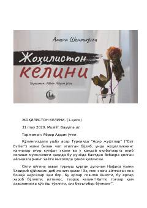

JKZulm va jaholat girdobida qolgan ayollar hayotidan og'ir haqiqatlar.
Bu asar Turkiyada 'Esir Evliler' nomi bilan chop etilgan bo'lib, o'zbek tiliga Abror Adham o'g'li tomonidan tarjima qilingan. Romanda johillik va zulm oqibatida azob chekayotgan ayollar, xususan, eri va qaynatasidan kaltaklanib, o'z joniga qasd qilmoqchi bo'lgan Nafisa va uning atrofidagilari hayoti tasvirlanadi. Asarda oilaviy zo'ravonlik, jaholat va ijtimoiy adolatsizlik mavzulari chuqur his-tuyg'u bilan yoritilgan.